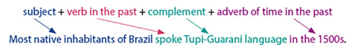
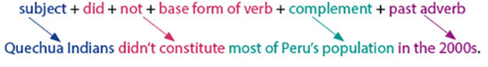
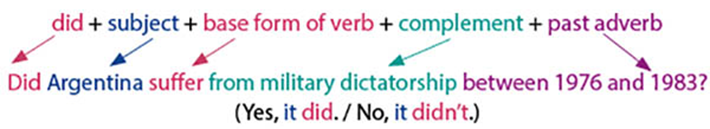
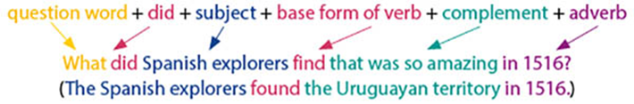
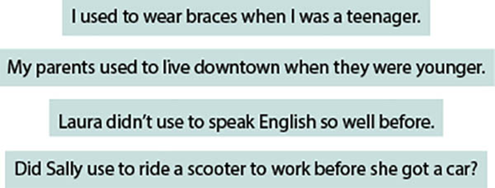
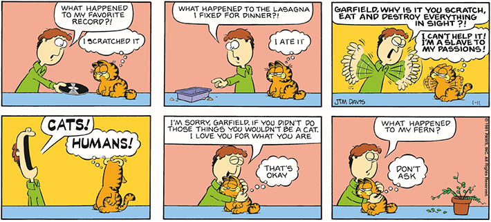

By beholding we can see the world in a wider and wiser way.
martin-dm/iStockphoto.com
The Oxford Dictionary defines behold as “to see or observe someone or something, especially of remarkable or impressive nature.” We are flooded by billions of sensory impulses all the time and that is how we interpret the world. Our attention and interpretation determine what we believe in. The way we see the history facts, the natural disasters, the human social transformations and the technological changes that have taken place on the planet so far affects us in some way.
For example, if we looked at the homeless people as we walked by the street, and tried to put ourselves in their shoes and understand their situation, instead of judging, we could attempt to interfere in a positive way. We could decide to do volunteer work or call the social assistance.
With the world moving in such a fast pace, it is only natural that we look at things but don’t really see them, and we may forget that paying attention to what happened in the past, and still happens currently around us, is what keeps the world going around. Whatever we learned, saw, and experienced through life tends to have a strong impact on our behavior. Being able to select and apply the learnings to our lives will bring us the chance to grow and evolve. Behold the best and become the finest, this way you can influence people and turn into an object of transformation to those around you.
- Do you agree with the title of the chapter: “We become what we behold”? Give an example of something that has caused an impact on you, such as a piece of art, a touching book or a food dish.•
- How much are you affected by the things you behold?•
- Imagine you are walking on the streets and notice soot coming down from the sky, even though you are in the middle of the city. After that, you watch the news and realize the soot came from the Amazon forest. How does it strike you?
 Neste capítulo serão abordadas as habilidades
EM13LGG301,
EM13LGG402,
EM13LGG403.
Neste capítulo serão abordadas as habilidades
EM13LGG301,
EM13LGG402,
EM13LGG403.
Simple Past tense
As we studied before, the Simple Past (also called past simple, past indefinite or preterit) is a verb tense which is used to show that a completed action took place at a specific time in the past. The simple past is also frequently used to talk about past habits and generalizations.
Simple Past tense forms
Affirmative form
The structure for the affirmative form is usually:
Negative form
The structure for the negative form is usually:
Interrogative form
The structure for the yes / no questions is usually:
Wh questions
The structure for the Wh questions is usually:
The emphatic “did”
Emphasizing what you say or write helps you make your message clearer, and it is very common and natural. You can use the words “do”, “does”, and “did” to put emphasis on a statement. For the Simple Past, we use the auxiliary verb “did”. This form of emphasis can be used when we’re contradicting what someone is saying in a conversation or when we’re being emotive. It is important to notice that when using “did” for emphasis the following verb remains in the base form.
Take the following examples:
Used to
The Simple Past can also be used to describe a habit which stopped in the past. In such situation, we can replace the Simple Past with “used to”, that is a common expression used to talk about habits in the past. To make it clear that we are talking about a habit, we often add expressions such as: always, often, usually, never, when I was a child, when I was younger etc.
Grammaring
Garfield, Jim Davis © 1981 Paws, Inc. All Rights Reserved / Dist. by Andrews McMeel Syndication
1
Choose the alternative that presents the correct sequence of verbs in the Simple Past tense to fill in the blanks in the comic strips.
- happens / happens / fixing / did / happens
- happened / happened / fixed / didn’t do / happened
2
Complete the spaces with the verbs in the Simple Past tense. Refer to the previous chapters if you have questions about spelling.
- The gardeners (work) in our front yard all day yesterday.
- Silvia (worry) about her Portuguese final exam.
- The tennis match (last) about five hours.
- Tim (like) the new movie very much.
- The teacher (tell) us about her plans for next year.
3
Use the emphatic “did” to reply affirmatively the statements below. Take a look at the example.Why didn’t you clean your bedroom?
I did clean my bedroom.
- I can’t see Tom anywhere in the party.
- I can’t believe mom forgot to buy some cheese.
- Why didn’t you observe the details?
- Please, go back to the kitchen and do the dishes.
Enem PPL 2018 Texto para a questão 1.
The Four Oxen and the Lion
A Lion used to prowl about a field in which Four Oxen used to live. Many a time he tried to attack them; but whenever he came near, they turned their tails to one another, so that whichever way he approached them he was met by the horns of one of them. At last, however, they quarreled among themselves, and each went off to pasture alone in a separate corner of the field. Then the Lion attacked them one by one and soon made an end of all four.
Disponível em: www.aesopfables.com. Acesso em: 1 dez. 2011.
1
A fábula The Four Oxen and the Lion ilustra um preceito moral, como se espera em textos desse gênero. Essa moral, podendo ser compreendida como o tema do texto, está expressa em:
- O mais forte sempre vence.
- A união faz a força.
- A força carrega a justiça nas costas.
- O ataque é a melhor defesa.
- O inimigo da vida é a morte.
Col. Naval-RJ 2017 Texto para as questões 2 e 3.
As the Olympics Approaches, a Lesson in Overcoming Adversity
Bert R. Mandelbaum, MD July 20, 2016
I’ve known a lot of athletes who qualified for the Olympic Games __________ injuries. But I know of only one who qualified because of an injury.
Cliff Meidl’s story captures the spirit of the Olympics.
In November 1986, Cliff, a 20-year-old plumber’s apprentice, hit three buried high-voltage electrical cables with a jackhammer. An estimated 30,000 volts surged through his body, exploding bone and cartilage from the inside all the way up to his head. To put that into perspective, electric chairs use only 1500-2000 volts for executions. So it’s safe to say that Cliff should have died.
And he nearly did. His heart stopped. Paramedics were able to get it going again, but they had to resuscitate him on the way to the hospital.
As part of a team with renowned plastic surgeon Malcolm Lesavoy, MD, and others, I got to work reconstructing Cliff’s legs. Our best hope was to avoid amputation.
But very quickly, we noticed something else going on – something that had nothing to do with our expertise. Through every step of his painful rehabilitation, Cliff grew more and more determined. He never complained. He just asked, “What’s next?”
Before he had even finished the rehabilitation, Cliff started paddling various watercrafts. The days spent on crutches had already strengthened his upper body, and he took naturally to the sport. The same year in which he was injured, he began competing in canoe and kayak events, and in 1996 he qualified for the Olympics – not the Paralympic Games, the Olympic Games.
Four years later, in Sydney, Australia, I was overseeing the sports medicine team at the Olympic soccer tournament. I was sitting in the stands during the opening ceremonies when Cliff walked into the Olympic Stadium carrying the Stars and Stripes.
It’s a long-standing tradition for delegations of athletes to select one among their number to bear the flag, and the choice often symbolizes some extraordinary accomplishment. I had no idea that Cliff would be selected. So when he strode into the stadium with a normal gait, I nearly broke down.
Moments like that reinforce what I have always believed: that sport can bring out the best in us all.
The Olympic Games (…) are devoted to celebrating the human capacity to improve body, mind, and soul.
They are about taking part – not necessarily about winning. Cliff’s peers in the US delegation of 2000 recognized that when they elected him to bear the nation’s colors. He never won a medal at the games, but the spirit with which he overcame adversity inspired all of them.
The Olympic motto – faster, higher, stronger – can help our patients realize that the real victory is the “win, within”. The Win Within: Capturing Your Victorious Spirit is the name of the book I wrote to show people that coming back from adversity is part of our heritage – that we as human beings are more adapted to adversity than we are to success.
Adversity is the engine of unimagined opportunity. It can unleash our energy and stimulate our will. It moves us to succeed. If I don’t have food, I have to go get some. If I’m cold, I have to build a shelter.
I remind patients who don’t participate in sports that they have the heritage of athletes. We all have the genes of pursuit-hunters who survived by running down their prey and running away from their predators. That’s why even now, in 2016, when we go out and take a run, we feel good. We get an endorphin surge and our lipids go down. Our hearts and brains become clear.
The life of sport and sport of life are interlinked. Exercise is our birthright; it’s our legacy; it’s why we are here.
We no longer have to fear saber-toothed tigers or cave bears. But when you look today at how people can be successful in 2016, it’s by avoiding the predators in our urban life: overeating, inactivity, and smoking. And it’s by rising to meet adversity.
(Adapted from http://www.medscape.com/viewarticle/866279)
2
Considering the text, the words “nearly” (4th and 9th paragraphs) and “overseeing” (8th paragraph) mean, respectively, “________” and “_______”.
- seldom / helping
- nearby / joining
- certainly / meeting
- quite / disregarding
- almost / supervising
3
According to the text, which statement is correct?
- Cliff Meidl got seriously injured during a competition and almost lost his leg.
- In 1996, Cliff Meidl took part in the Paralympic Games for the first time.
- In 2000, Cliff Meidl was the US flag bearer during the opening ceremonies of the Olympic Games.
- Cliff Meidl has already won several medals, including a gold medal at the Olympic Games in 1996.
- After the accident, Cliff Meidl wrote a book called The Win Within: Capturing Your Victorious Spirit .
Which skin colour are you? The human swatch chart that confronts racism
In 1933, in a book called The Masters and the Slaves , the Brazilian anthropologist Gilberto Freyre wrote: “Every Brazilian, even the light-skinned, fair-haired one, carries about him on his soul, when not on soul and body alike, the shadow, or at least the birthmark, of the aborigine or the negro.” This was forefront in the mind of the French artist Pierre David when he moved to Brazil in 2009. “When I was in the streets, I could see so many skin colours”, he says. He decided to make a human colour chart, like one you would find in the paint section of B&Q shop, but showing the gradations and shades of our skin colour. The project, called Nuancier or “swatches”, was first shown at the Museu de Arte Moderna in Salvador – Bahia, and is now on show in his native France. “Brazil has a better attitude to skin colour than other developed nations”, he says. “There’s no doubt, because the concept of skin colour difference was recognised very early in their history. Now, it even appears on identity documents.”
Yet Nuancier, David says, is still a critique of racism, in Brazil and around the world. “This work may seem provocative – to classify men by colour, to industrially produce the colour of an individual so it can be store-bought. But this is a demonstration of the commodification of bodies. It denounces racism anywhere it is found in the world.”
SEYMOUR, T. Disponível em: www.theguardian.com. Acesso em: 21 out. 2015 (adaptado).
1
O artista francês Pierre David, ao evidenciar seu encantamento com a diversidade de cores de peles no Brasil, no projeto Nuancier, também
- desencadeia um estudo sobre a atitude dos brasileiros com base na análise de características raciais.
- denuncia a discriminação social gerada com a distinção de cores na população de Salvador.
- destaca a mistura racial como elemento-chave no impedimento para a ascensão social.
- provoca uma reflexão crítica em relação à classificação e à mercantilização das raças.
- elabora um produto com base na variedade de cores de pele para uso comercial.
Unesp 2020 Texto para as questões 2 e 3.
(https://fee.org)
What is Gentrification?
Gentrification is a general term for the arrival of higher-income people in an existing working-class urban district, causing a related increase in rents and property values, and changes in the district’s character and culture. The term is often used negatively, suggesting the displacement of low-income communities by affluent outsiders. But the effects of gentrification are complex and contradictory, and its real impact varies.
Many aspects of the gentrification process are desirable. Who wouldn’t want to see reduced crime, new investment in buildings and infrastructure, and increased economic activity in their neighborhoods? Unfortunately, the benefits of these changes are often enjoyed disproportionately by the new arrivals, while the established residents find themselves economically and socially marginalized.
Although there is not a clear-cut technical definition of gentrification, it is characterized by several changes:
• Demographics: An increase in median income, a decline in the proportion of ethnic minorities, and a reduction in household size, as low-income families are replaced by young singles and couples.
• Real estate markets: Large increases in rents and home prices, increases in the number of evictions, conversion of rental units to ownership (condos) and new development of luxury housing.
• Land use: A decline in industrial uses, an increase in office or multimedia uses, the development of live-work “lofts” and high-end housing, retail, and restaurants.
• Culture and character: New ideas about what is desirable and attractive, including standards (either informal or legal) for architecture, landscaping, public behavior, noise, and nuisance.
(http://archive.pov.org. Adaptado.)
2
Responda em português:
- Como a pergunta do título do texto é respondida no primeiro parágrafo? Quais consequências da gentrificação para o mercado imobiliário são citadas no primeiro parágrafo?
- De acordo com o primeiro parágrafo, por que o termo gentrificação pode ter conotação negativa? Qual ponto de vista é apresentado sobre isso no primeiro parágrafo?
3
Responda em português:
- De acordo com as informações apresentadas no segundo parágrafo, cite dois aspectos positivos da gentrificação.
- O final do segundo parágrafo apresenta uma contradição sobre os benefícios da gentrificação. Qual é essa contradição?